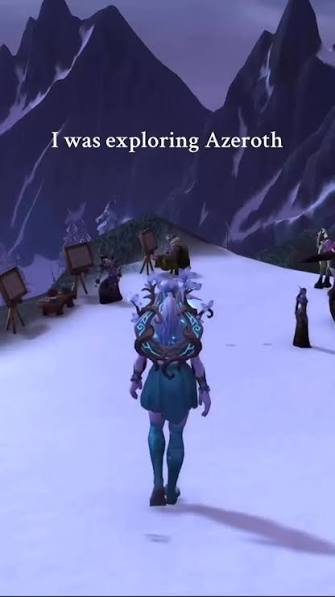
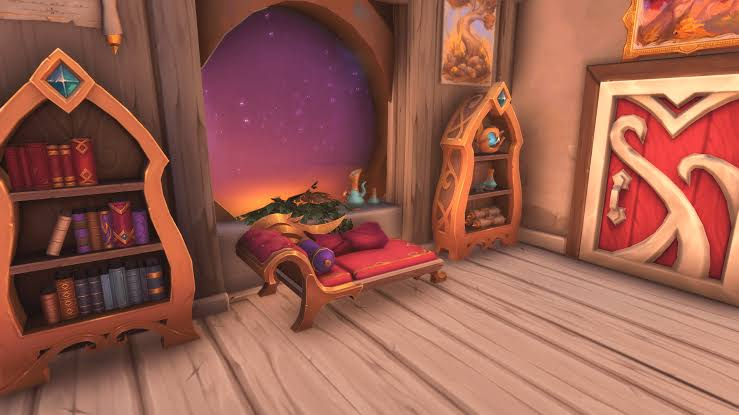
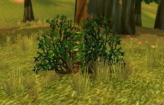
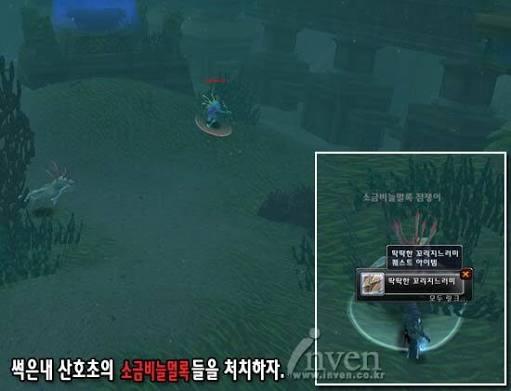

1. 캐릭터가 눈을 깜빡임 그리고 눈꺼풀이 따로있음 속눈썹이랑 같이 닫히면서 감았다 떴다함
2. 눈위를 걸어가면 발자국이 남음 종족에 따라 발자국이 달라짐

캐릭터가 발굽을가진 종족이면 발굽자국이 남음
3. 모든 야외 지형을 로딩없이 이동가능
4. 바닥의 재질에 따라 발자국소리가 달라짐
철판이면 깡깡깡 나무면 또각또각 돌이면 탁탁탁 잔디면 파삭파삭

5. 별 좆만한 잔디나 덤불까지 캐릭터가 닿으면 푸스스하고 기울어짐

6. 투명한 벽이 캐릭터를 가로막는일 없음 어디든 뛰어내리고 올라탐
7. 몬스터의 배치에 생태계가있음
8. 물안에서 자유롭게 수영이 가능
9. 물안에도 수중생물 문명이있음

10. 사슬갑옷을 입고 뛰어다니면 찰그락 찰그락 소리가남
11. 공격받는 적의 재질에 따라 피격음이 달라짐 나무로 된 허수아비등을 때리면 퍽하는소리가 남
12. 종족 크기에 따라 실제로 충돌판정이 달라짐
13. 나의 원거리공격 직선판정은 캐릭터의 "눈"에서 시작됨 즉 키가 작아서 내 눈이 담벼락보다 낮으면 그 너머로 쏠수없고
키가 커서 내 눈이 담벼락보다 높으면 그 너머로 쏠수있음 물론 적이 담벼락 너머로 작은 키의 캐릭터를 맞추는것도 불가능함
14. 내가 유저나 NPC를 클릭하면 머리가 돌아가서 그 캐릭터를 쳐다봄 그 캐릭터가 이동하면 목이 회전하면서 시선이 따라감
15. 채팅을 치면 캐릭터 입이 움직임
2004년에 이겜 처음나왔을떄 사람들 반응은 이 씨발새끼들이 대체 뭘만든거지하는 경악이었음
지금은 별거 아닐수있는것들이지만 그땐 온라인게임에서 이게 전부 다구현된건 아예 없다고 보면됨
클래식을 계속 우려먹어도 사람들이 계속 몰려드는 이유는 그냥 쌩 오리지널인데도 저정도였기 때문
난 얼라랑 호드 대화할수있게 만든 와민정음이 제일 대단하다고 느낌 나중에 보니까 내가보던 여행유투버 폭간트가 만들었더라 ㄷ